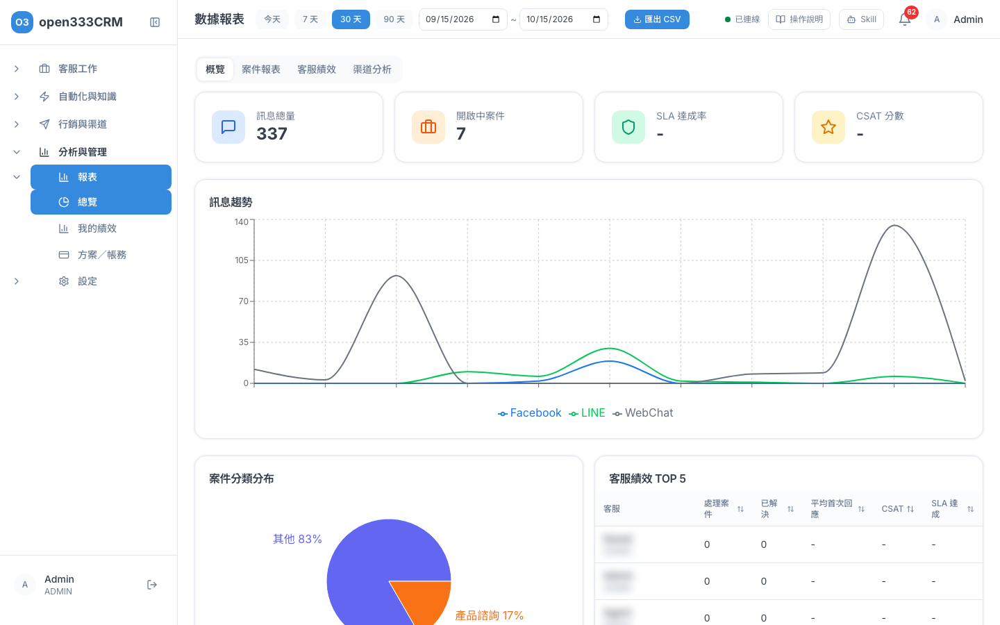
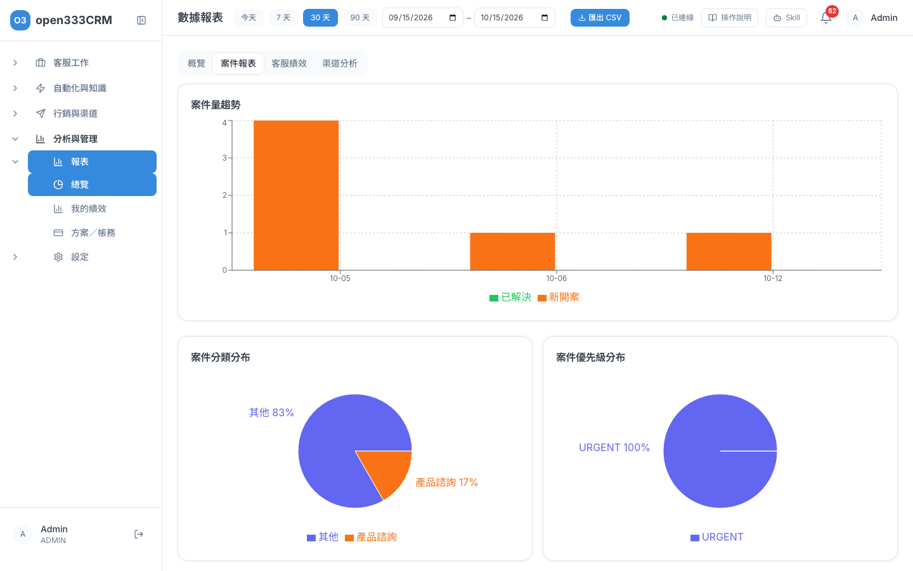
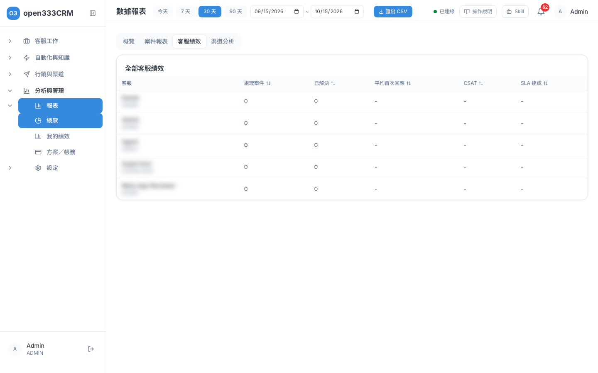
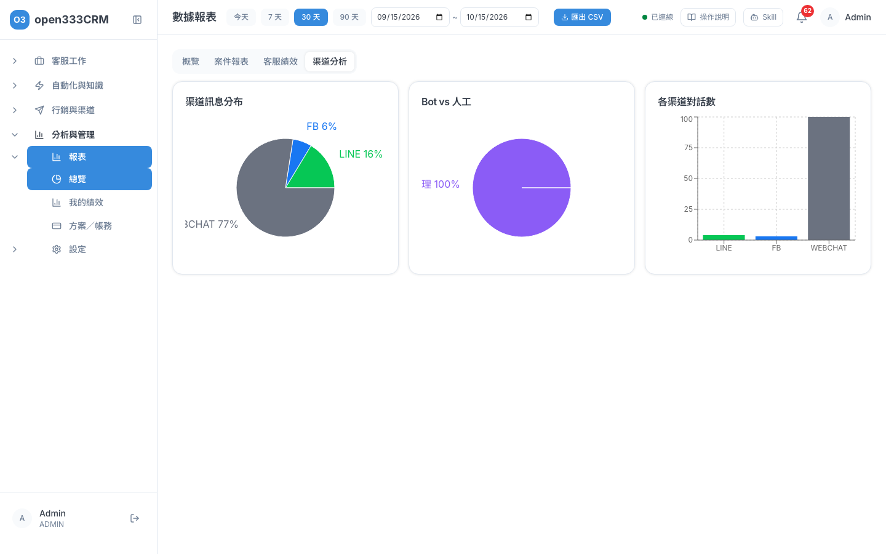
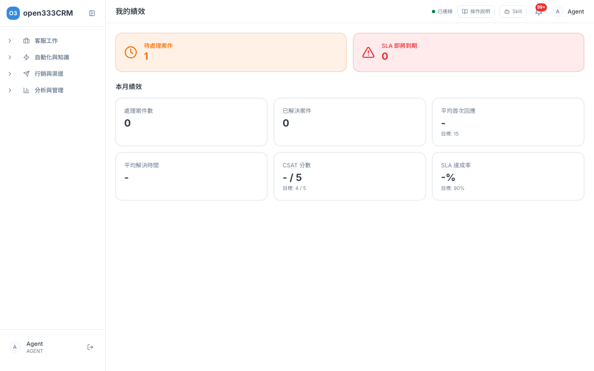

CHAPTER 13 · 分析與管理
報表
用數字看團隊的服務成績：訊息量、案件處理、SLA 達成、客戶滿意度、各渠道來客。客服也能看自己這個月的績效。
1 這頁能做什麼
報表把客服的工作變成數字：這段時間來了多少訊息、開了多少案件、有沒有在時限內處理完、客人滿不滿意、客人都從哪個渠道來。主管可以用它看團隊狀況，客服可以看自己這個月的成績。
從左側選單「分析與管理 → 報表」進入，底下有「總覽」和「我的績效」。總覽頁上方標題是「數據報表」。
選期間今天、7 天、30 天、90 天或自訂
概覽四個最重要的數字和趨勢
案件報表案件量、分類、SLA 違規、升級率
客服績效每位客服的處理量與速度
渠道分析客人從哪個渠道來
匯出 CSV下載成表格留存
我的績效自己這個月的成績
ℹ️
看「總覽」需要「檢視報表」權限，主管和管理員預設都有。一般客服預設只有「檢視個人數據」，請看第 8 節「我的績效」的進入方式。
2 選期間
頁面右上角決定報表要看哪一段時間，預設是近 30 天。
- 點「今天」「7 天」「30 天」「90 天」其中一個，報表會馬上更新。
- 要指定日期，在兩個日期框分別選開始日和結束日。
- 上方四個分頁「概覽」「案件報表」「客服績效」「渠道分析」都會套用同一段期間。
ℹ️
自訂日期會把開始日和結束日都算一整天。例如要看 10/1～10/15，開始日選 10/1、結束日選 10/15 就好。
ℹ️
- 不小心把日期框清空也沒關係，報表會維持原本的期間，再選一次日期就好。
- 開始日不能晚於結束日。選反了畫面只會顯示「-」或「尚無資料」，不會有錯誤提示。
- 頁面不會自動加入你打開之後才進來的新訊息。想看最新數字，再按一次期間按鈕，或重新整理頁面。
3 概覽
「概覽」是一眼看懂團隊狀況的地方：上面四張數字卡、中間訊息趨勢、下面案件分類和客服前五名。

四張數字卡
| 卡片 | 白話意思 | 注意 |
|---|---|---|
| 訊息總量 | 這段期間所有訊息的數量，包含客人傳來的、客服回的和 Bot 回的 | Bot 回得多，這個數字也會變大 |
| 開啟中案件 | 現在還沒結案的案件（工單）數，包含開啟、處理中、等待中、已升級 | 不受上方期間影響，永遠是當下的數字 |
| SLA 達成率 | 這段期間解決的案件裡，有幾成是在規定時限內解決的 | 只算有設定處理時限（SLA）的案件；沒有這類案件時顯示「-」 |
| CSAT 分數 | 客人滿意度評分的平均，滿分 5 分 | 依案件建立的日期歸到期間，不是依評分的日期；沒人評分時顯示「-」 |
訊息趨勢
每天各渠道的訊息量折線圖，可以看出哪幾天特別忙。
ℹ️
- 圖上目前只有 LINE、Facebook、WebChat 三條線。Instagram 私訊有算進「訊息總量」，但圖上沒有自己的線。
- 每日圖表目前以國際標準時間切日，台灣凌晨 0 點到 8 點的訊息會算在前一天。
4 案件報表
看案件（工單）的量、種類和有沒有逾時。

| 圖表 | 白話意思 |
|---|---|
| 案件量趨勢 | 每天新開幾件案件（橘色「新開案」）。綠色「已解決」是當天新開的案件裡，到現在已經解決的數量，不是「當天解決了幾件」 |
| 案件分類分布 | 各分類案件佔多少比例，看客人最常為了什麼事找你們 |
| 案件優先級分布 | 各優先級的比例。圖上目前顯示英文：URGENT＝緊急、HIGH＝高、MEDIUM＝中、LOW＝低 |
| SLA 違規案件 | 現在已經超過處理時限、還沒結案的案件，最多列 50 筆。表格的「狀態」欄目前顯示英文，例如 OPEN＝開啟、IN_PROGRESS＝處理中。沒有的話顯示「無 SLA 違規案件」 |
| 升級率 | 這段期間建立的案件中，目前狀態還是「已升級」的比例。升級後已經解決的案件不會算進去，所以這個數字通常偏低 |
✨
「SLA 違規案件」是主管每天最該看的清單：裡面的案件都已經逾時，請優先指派或催辦。這張表不受上方期間影響。
5 客服績效
列出每位在職客服的成績。按欄位標題可以排序，例如按「處理案件」看誰最忙。

| 欄位 | 白話意思 |
|---|---|
| 客服 | 姓名與角色 |
| 處理案件 | 這段期間建立、目前指派給這位客服的案件數 |
| 已解決 | 上面那些案件中已經解決的數量 |
| 平均首次回應 | 案件建立後，平均多久第一次回覆客人。越短越好 |
| CSAT | 這位客服負責的案件，客人滿意度平均分數 |
| SLA 達成 | 這位客服在時限內解決的比例 |
ℹ️
案件是算在「目前的負責人」身上。案件中途轉給別人，整筆成績就會跟著移到新的負責人。
6 渠道分析
看客人都從哪個渠道來、有多少是 Bot 自己處理掉的。

| 圖表 | 白話意思 |
|---|---|
| 渠道訊息分布 | 各渠道訊息量佔比 |
| Bot vs 人工 | 這段期間建立、目前還沒結束的對話中，由 Bot 處理和由真人處理的比例。已結束的對話不算 |
| 各渠道對話數 | 各渠道有幾段對話 |
圖上的渠道名稱目前是系統代號，對照如下：
| 圖上顯示 | 實際渠道 |
|---|---|
| LINE | LINE 官方帳號 |
| FB | Facebook Messenger |
| THREADS | Instagram 私訊 |
| WEBCHAT | 網站聊天視窗 |
ℹ️
圓餅圖旁的文字有時會被切掉一半，看不清楚時，把滑鼠移到色塊上，就會顯示完整名稱和數字。
7 匯出 CSV
需要做簡報或留存時，可以把目前這個分頁的資料下載成表格檔。
- 先選好期間，再切到要匯出的分頁（概覽、案件報表、客服績效或渠道分析）。
- 按右上角「匯出 CSV」。
- 瀏覽器會下載一個檔案，例如
cases_report.csv。
ℹ️
匯出需要管理員開給你「匯出報表」權限，沒有權限的人看不到「匯出 CSV」按鈕。匯出失敗時，按鈕下方會用紅字寫出原因，照著處理或稍後再試。
用 Excel 或 Google 試算表開啟
下載的檔案在 Excel 直接雙擊就能打開，中文會正常顯示。也可以在 Google 試算表選「檔案 → 匯入 → 上傳」把檔案拖進去。
概覽 CSV 的欄位名稱
案件、客服、渠道三種 CSV 的欄名是中文。概覽 CSV 目前是英文欄名，對照如下：
| 欄名 | 意思 |
|---|---|
totalMessages | 訊息總量 |
inboundMessages | 客人傳來的訊息數 |
outboundMessages | 我方（客服與 Bot）送出的訊息數 |
openCases | 開啟中案件（當下） |
newCases | 期間內新開案件數 |
resolvedCases | 期間內解決的案件數 |
slaAchievementRate | SLA 達成率（%） |
avgFirstResponseMinutes | 平均首次回應（分鐘） |
avgResolutionMinutes | 平均解決時間（分鐘） |
csatAvg | CSAT 平均分數 |
csatPositiveRate | 好評比例（%） |
ℹ️
匯出的檔案含客服姓名、聯絡人名稱和案件標題，屬於內部資料，請不要外傳。
8 我的績效
「我的績效」只看你自己：現在手上有多少案件、有沒有快逾時的，以及這個月的成績。
怎麼進入
點左側選單「分析與管理 → 報表 → 我的績效」。一般客服也看得到這個項目；只能看個人數據的帳號，「報表」底下只會出現「我的績效」，不會有「總覽」。

上方兩張提醒卡
| 卡片 | 白話意思 |
|---|---|
| 待處理案件 | 現在指派給你、狀態是「開啟」或「處理中」的案件數。等待中、已升級的不算 |
| SLA 即將到期 | 30 分鐘內就要超過處理時限的案件數，看到數字請優先處理 |
本月績效
| 卡片 | 白話意思 | 目標 |
|---|---|---|
| 處理案件數 | 這個月建立、指派給你的案件數 | |
| 已解決案件 | 上面那些案件中已經解決的數量 | |
| 平均首次回應 | 案件建立後平均多久第一次回覆 | 15 分鐘以內 |
| 平均解決時間 | 案件從建立到解決平均花多久 | |
| CSAT 分數 | 客人滿意度平均，滿分 5 | 4 分以上 |
| SLA 達成率 | 在時限內解決的比例 | 90% 以上 |
ℹ️
有目標的卡片，數字旁邊會自動標示：綠勾代表達標，黃色警示代表還沒達標。「平均首次回應」的目標是 15 分鐘，卡片上寫的「目標: 15」就是 15 分鐘。
ℹ️
- 沒有資料時會顯示「-」「-%」或「- / 5」，代表這個月還沒有可以計算的案件。
- 「本月」目前以國際標準時間計算，每月 1 號凌晨 0 點到 8 點的案件會算在上個月。
- 頁面每分鐘自動更新一次，不能切換到其他月份。